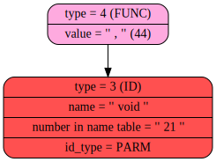
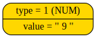

<pre>

Im IN GetP
CURRENT TOKEN TYPE = 1, VALUE = '
' (10)<body style="background-color: #AFEEEE"><hr> <h2>BEFORE 'WHILE' IN GetExpression >>> LEFT NODE:</h2> <br> <hr>



Token number 11: token type = 2, token_value = ';' (59), str = 'shutup
lethimcook b'

Im IN GetP
CURRENT TOKEN TYPE = 1, VALUE = '' (5)<body style="background-color: #AFEEEE"><hr> <h2>BEFORE 'WHILE' IN GetExpression >>> LEFT NODE:</h2> <br> <hr>


Token number 16: token type = 2, token_value = ';' (59), str = 'shutup
lethimcook d'

Im IN GetP
CURRENT TOKEN TYPE = 1, VALUE = '' (20)<body style="background-color: #AFEEEE"><hr> <h2>BEFORE 'WHILE' IN GetExpression >>> LEFT NODE:</h2> <br> <hr>


Token number 21: token type = 2, token_value = ';' (59), str = 'shutup
Jump (bro, m'
<body style="background-color: #AFEEEE"><hr> <h2>BEFORE 'WHILE' IN GetExpression >>> LEFT NODE:</h2> <br> <hr>


<body style="background-color: #AFEEEE"><hr> <h2>BEFORE 'WHILE' IN GetExpression >>> LEFT NODE:</h2> <br> <hr>


<body style="background-color: #AFEEEE"><hr> <h2>BEFORE 'WHILE' IN GetExpression >>> LEFT NODE:</h2> <br> <hr>


Im IN GetP
CURRENT TOKEN TYPE = 2, VALUE = '+' (43)<body style="background-color: #AFEEEE"><hr> <h2>BEFORE 'WHILE' IN GetExpression >>> LEFT NODE:</h2> <br> <hr>


Im IN GetP
CURRENT TOKEN TYPE = 1, VALUE = '' (5)<body style="background-color: #AFEEEE"><hr> <h2>IN 'WHILE' IN GetExpression >>> RIGHT NODE</h2> <br> <hr>


<body style="background-color: #AFEEEE"><hr> <h2>FRESH NODE AHAHAH:</h2> <br> <hr>


Token number 32: token type = 2, token_value = ';' (59), str = 'shutup

bro is bro'
<body style="background-color: #AFEEEE"><hr> <h2>BEFORE 'WHILE' IN GetExpression >>> LEFT NODE:</h2> <br> <hr>


<body style="background-color: #AFEEEE"><hr> <h2>IN 'WHILE' IN GetExpression >>> RIGHT NODE</h2> <br> <hr>


Token number 38: token type = 2, token_value = ';' (59), str = 'shutup

forreal (m'
<body style="background-color: #AFEEEE"><hr> <h2>BEFORE 'WHILE' IN GetExpression >>> LEFT NODE:</h2> <br> <hr>


Im IN GetP
CURRENT TOKEN TYPE = 1, VALUE = '' (14)<body style="background-color: #AFEEEE"><hr> <h2>IN 'WHILE' IN GetExpression >>> RIGHT NODE</h2> <br> <hr>


<body style="background-color: #AFEEEE"><hr> <h2>BEFORE 'WHILE' IN GetExpression >>> LEFT NODE:</h2> <br> <hr>


Im IN GetP
CURRENT TOKEN TYPE = 1, VALUE = '' (2)<body style="background-color: #AFEEEE"><hr> <h2>IN 'WHILE' IN GetExpression >>> RIGHT NODE</h2> <br> <hr>


Token number 51: token type = 2, token_value = ';' (59), str = 'shutup
stoopit shut'

Token number 53: token type = 2, token_value = ';' (59), str = 'shutup

stoopit
$'
<body style="background-color: #AFEEEE"><hr> <h2>TEST OF PROGRAMM</h2> <br> <hr>


